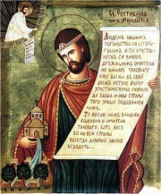
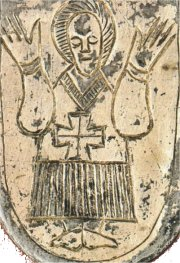
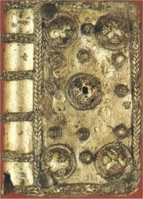
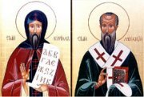
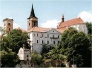
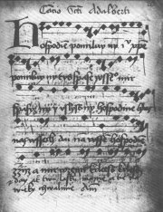
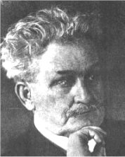
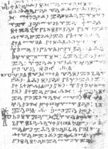
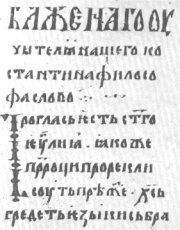

Kní�e Rostislav byl za své zásluhy o pravoslavnou církev svatoøeèen.
|
STAROSLOVÌNSKÁ LITERATURA
O nejstarších dìjinách Slovanù máme jen kusé zprávy ze støedovìkıch kronik, listin a legend. Vıznamné jsou i archeologické nálezy. Nejstarší písemné památky na našem území vznikly za vlády velkomoravského kní�ete Rostislava (846-870), kterı do zemì pozval køes�anskou misii z Konstantinopole. Byzantskı císaø Michal III. i patriarcha Fótius mu vyhovìli a v roce 863 poslali na Velkou Moravu dva vìrozvìsty – soluòské bratry Konstantina (Cyrila) a Metodìje. Aby jim slovanské obyvatelstvo rozumìlo, vytvoøili z místního makedonského náøeèí staroslovìnštinu a vymysleli pro ni nové písmo – hlaholici. O jejich úspìchu svìdèí i to, �e na Svatoplukovì dvoøe pøijal od Metodìje køest èeskı kní�e Boøivoj. Po Metodìjovì smrti byl ale jeho nástupce Gorazd s dalšími stoupenci staroslovìnské liturgie vyhnán a jejich místo zaujali latinští knì�í. Staroslovìnské písemnictví se dále rozvíjelo v Bulharsku, Chorvatsku, Srbsku a èásteènì i v Èechách (Sázavskı klášter a v dobì Karla IV. klášter Na Slovanech, dnešní Emauzy). Staroslovìnština (církevní slovanština) zùstala bohoslu�ebnım jazykem v pravoslavné církvi.
|
Historie
Bohemia získala svùj název podle keltského kmene Bójù, kterı vytlaèili germánští Markomani a Kvádové. Slovanské kmeny postupovaly na západ od 5. stol. n.l. Na zaèátku 7. stol. zalo�il franskı kupec první kmenovı svaz Slovanù. Sámova øíše ale podlehla náporu Avarù. Prvním státem na našem území byla Velkomoravská øíše (830-907). Vládla zde kní�ata Mojmír I. (získal Pribinovo nitranské kní�ectví), Rostislav (pozval Konstantina a Metodìje), Svatopluk (ovládl Èechy) a Mojmír II. (byl pora�en Maïary).
|
Staroslovìnské písemnictví
Tì�ištì cyrilometodìjské misie spoèívalo v šíøení køes�anské víry v øeèi, které by obyvatelé Velké Moravy rozumìli. Proto Konstantin s Metodìjem hlavnì pøekládali dùle�ité texty do staroslovìnštiny. Nejprve biblické knihy (evangelia), právní normy (Zákon sudnyj ljudem) a spisy církevních otcù. Kromì toho psali i skladby pùvodní (Proglas, Abecední modlitba...). Vìtšina staroslovìnskıch dìl vznikla mimo naše území po vyhnání jejich �ákù kní�etem Svatoplukem.
|
Konstantin: Proglas
Proglas je vùbec první pùvodní literární památka, která vznikla na našem území. Autorství této veršované pøedmluvy k pøekladu ètyø evangelií je pøipisováno Konstantinovi. Vysvìtluje se v ní dùvod cyrilometodìjské misie a obhajuje smysl šíøení køes�anské víry ve srozumitelném jazyce.
|

Postava oranta z Mikulèic.
Proè jsou národy bez knih „nahé“? Co jsou „knihy“?
|
Panonské legendy

Relikviáø v podobì knihy
|
Panonské legendy
Èinnost moravskıch vìrozvìstù popisují tzv. Panonské legendy – �ivot sv. Konstantina-Cyrila a �ivot sv. Metodìje. Pøed pøíchodem na Velkou Moravu pùsobili v øíši Chazarù u Èerného moøe. Díky zázraku objevili na Krymu ostatky sv. Klimenta, jednoho z prvních pape�ù. Kdy� pøišli do Øíma (867) obhajovat staroslovìnskou bohoslu�bu, vzali je s sebou a slavnostnì je ulo�ili do baziliky San Clemente. Pape� liturgii v novém jazyce sice schválil, ale Konstantin (†869) v Øímì onemocnìl, a proto se u� do Velkomoravské øíše nevrátil. Vstoupil do kláštera, pøijal øádové jméno Cyril a brzy zemøel.
Metodìj (†885) byl jmenován moravskım arcibiskupem, ale cestou zpìt ho zajal solnohradskı arcibiskup. Na Velkou Moravu se dostal a� po tøech letech. V roce 880 znovu obhájil staroslovìnskou liturgii pøed pape�em, ale brzy po jeho smrti byli slovanští knì�í vyhnáni. Vìtšina odešla do Bulharska.
|
Sv. Cyril a sv. Metodìj

Cyril a Metodìj byli za své zásluhy o šíøení køes�anství svatoøeèeni, v roce 1400 se stali moravskımi zemskımi patrony a pozdìji patrony èeskımi i evropskımi.
|
Sázavskı klášter

|
Staroslovìnské písemnictví v Èechách
Centrem staroslovìnského písemnictví v Èechách byl Sázavskı klášter, kterı zalo�il sv. Prokop spoleènì s kní�etem Oldøichem v roce 1032. Na jeho pùdì vznikly staroslovìnské legendy o èeskıch svìtcích (sv. Václav, sv. Ludmila), ale dochovaly se pouze tzv. Pra�ské hlaholské zlomky. Po církevním schizmatu donutil kní�e Spytihnìv II. mnichy k odchodu do Uher (1056-1062). Zpìt je pozval Vratislav II, ale kdy� byla staroslovìnská liturgie zakázána, kní�e Bøetislav II. mnichy definitivnì vyhnal (1097).
|
Sv. Prokop
Podle legend �il Prokop jako poustevník v sázavskıch lesích. Kdy� se ho sna�il pokoušet ïábel, zapøáhl ho do pluhu a zoral s ním pole. Po setkání s kní�etem Oldøichem zalo�il Sázavskı klášter a stal se jeho opatem. Sv. Prokop je patronem èeské zemì, horníkù a rolníkù.
|
Hospodine, pomiluj ny

|
Hospodine, pomiluj ny
Staroslovìnská duchovní píseò Hospodine, pomiluj ny pochází z 10. stol. Zachovala se její poèeštìná verze, která pøe�ila vyhnání mnichù ze Sázavského kláštera. Zpívala se nejen v kostele, ale také pøi vıznamnıch pøíle�itostech (korunovace).
Hospodine, pomiluj ny
Hospodine, pomiluj ny! *(smiluj se nad námi)
Jezu Kriste, pomiluj ny!
Ty spase všeho mira, *(spasiteli celého svìta)
spasi� ny i uslyšiš, *(spas a vyslyš nás)
Hospodine, hlasy našì!
Daj nám všìm, Hospodine
�izò a mir v zemi! *(úrodu a pokoj)
Krleš! Krleš! Krleš! *(Kyrie eleison = Pane, smiluj se)
|
|

Leoš Janáèek (1854-1928) slo�il na motivy písnì Hospodine, pomiluj ny Glagolskou mši.
|
Hlaholice

Kyjevské listy zøejmì pocházejí z èeského území.
|
Jazyk a písmo
Staroslovìnština je mrtvı slovanskı jazyk. Jako církevní slovanština se tento jazyk pou�ívá pøi bohoslu�bách v pravoslavné církvi. Staroslovìnština vznikla z makedonského náøeèí, kterım se mluvilo v okolí Solunì, odkud pocházeli Konstantin s Metodìjem.
Za autora hlaholice je pova�ován Konstantin. Na rozdíl od dnešního písma se psalo pod øádky, písmena jsou tedy zarovnána nahoøe. Velmi volnì vycházejí z malıch písmen øecké abecedy.
Cyrilice vznikla o nìco pozdìji na území Bulharska a bìhem 12. stol. zcela vytlaèila hlaholici. Je zalo�ena na velkıch písmenech øecké alfabety a nìkterıch znacích hlaholice.
Pozdìji se z ní vyvinula azbuka (pùvodní názvy prvních dvou písmen byly „az“ a „buky“), která se pou�ívá v Rusku, Bulharsku a dalších státech. Tyto abecedy mají zvláštní znaky pro tzv. jery (tvrdé a mìkké znaky), které se v �ivıch slovanskıch jazycích nevyslovují.
|
Cyrilice

Proglas psanı cyrilicí
|
Internetové stránky
Cyril a Metodìj
Všeználek, hlaholice, cyrilice, azbuka
Sázavskı klášter, informace
Slavistické stránky
Kyjevské listy
|
Doporuèená èetba
Tøeštík, Dušan: Vznik Velké Moravy
Sázava, Památník staroslovìnské kultury v Èechách, Odeon, Praha 1988
Svatí spojují národy, Panevropa, Praha 1995
Vašica, Josef: Literární památky z epochy velkomoravské 863-885, Vyšehrad, Praha 1996
|
Pøiprav si referát o nìkteré z uvedenıch knih nebo internetovıch stránek.
|